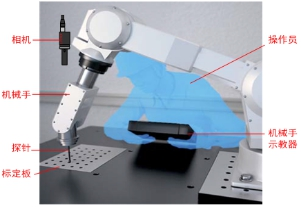

本工具用于触碰标定计算。触碰标定时，图像一次性对多个图形特征拍照定位，记录图像坐标。手动控制机械手，机械手末端探针依次触碰图形特征，记录触碰时机械手坐标。根据多组图像坐标和机械手坐标，视觉软件执行标定计算。触碰标定的操作如图1所示。

| 分类 | 参数名称 | 参数描述 |
|---|---|---|
| 属性窗口 | 标定计算类型 | 多点触碰标定：通过多个定位点，计算图像和机械手坐标系转换关系。拍照定位确定多个定位点的图像坐标，分别触碰已知定位点获取机械手坐标，即可计算图像和机械手坐标系转换关系。 单点平移触碰标定：即已知图像和机械手的旋转缩放关系，只进行一次触碰操作，计算图像和机械手的平移关系，完成完整转换关系。 修正触碰标定平移关系：对触碰标定结果的平台坐标，即平移关系进行校正。 |
| 机械手X/Y/D轴正方向 | 机械手的各个轴的正方向 | |
| 图像窗口 | 无 | 无 |
| 数据链 | 图像坐标向量 | 相机一次性对多个图形特征拍照定位得到的特征点图像坐标组成的向量。只在计算类型为多点触碰标定时使用。 |
| 机械手坐标向量 | 手动控制机械手末端探针依次触碰图形特征点，记录触碰时机械手坐标组成的向量。只在计算类型为多点触碰标定时使用。 | |
| 单个图像坐标 | 只在单点平移触碰标定场景中使用，表示对单个图像特征定位得到的图像坐标。 | |
| 单个机械手坐标 | 在单点平移触碰标定场景中，表示对机械手触碰到单个图像特征时的机械手坐标；在修正触碰标定平移关系场景中，表示标定结果平台坐标的修正量。 | |
| 输入标定结果 | 只在修正触碰标定平移关系场景中使用，表示已知的图像与平台坐标系的标定结果。 | |
| 高级界面 | 无 | 无 |
| 分类 | 参数名称 | 参数描述 |
|---|---|---|
| 监视窗口 | 标定结果 | 输出触碰标定结果。 |
| 机械手坐标轴方向 | 输出机械手的各个轴正方向。 | |
| 执行结果 | 工具执行结果。 | |
| 执行时间 | 工具执行时间。 | |
| 图像窗口 | 无 | 无 |
| 数据链 | 标定结果 | 输出触碰标定结果，供后序工具使用，同监视窗口参数。 |
| 机械手坐标轴方向 | 输出机械手的各个轴正方向。 |
无
无
参见“\Samples\触碰标定计算.gvp”。
其中轴位置生成工具是用来生成触碰标定平移修正量的，触碰标定计算工具004是用来演示修正触碰标定平移关系的，它的单个机械手坐标输入的就是轴位置生成工具的结果。